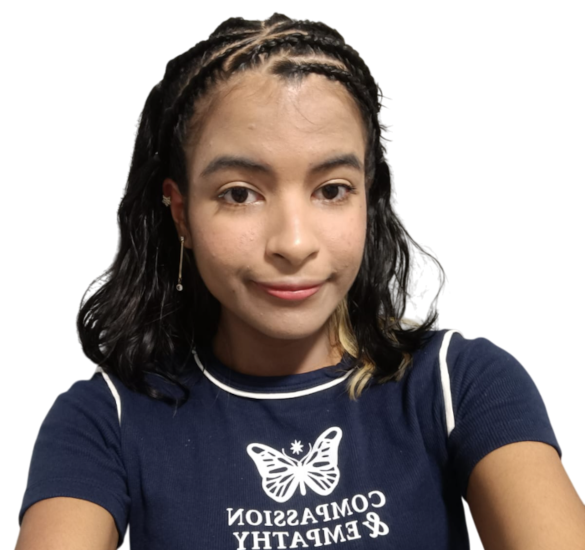

Olá! Meu nome é Lara.
Sou estudante do 6° semestre de Engenharia de Software no Centro Universitário de Várzea Grande (UNIVAG) e estagiária em desenvolvimento full stack na Spedy, uma startup de emissão de notas fiscais. No dia a dia, transito entre front-end e back-end (com React e .NET), atuando desde a criação de novas funcionalidades até testes e correção de bugs — o que me deu uma visão de como um sistema em produção realmente funciona.
Gosto de projetos que me tiram da zona de conforto. Por isso, participei de uma iniciação científica sobre gamificação como estratégia de apoio terapêutico para crianças com Transtorno do Espectro Autista (TEA), onde pude ver de perto como a tecnologia pode ir além do produto e virar também uma ferramenta de cuidado.
No fim, é isso que mais me motiva: a capacidade que a tecnologia tem de transformar lógica em soluções para problemas reais.